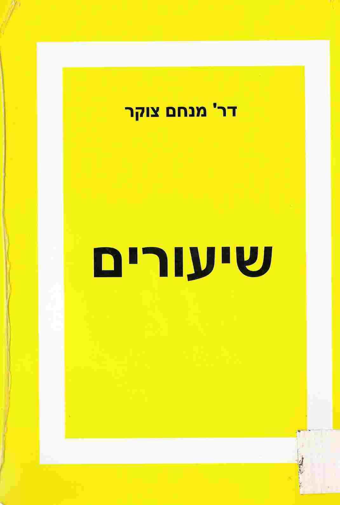
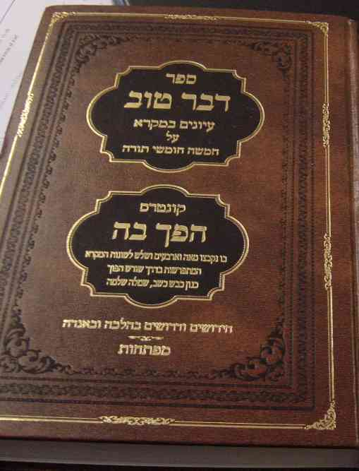

ראשי>
ספרים בנושאים תנ"כיים, של סופרים בני דורנו
קוד: סופרים בני דורנו בתנ"ך
סוג: אוסף
מאת:
אל:
- אהרן אמוזג
- ברוריה בן-דוד (וייס) - ספרי עזר למורים לתנ"ך
- הרב אילן חיים פור, מורשת
- הרב אליהו מאלי - אורות מציון
- הרב לוי סודרי - שירים וסרטונים לבקיאות בתנ"ך / אראל
- חגי הופר
- ד"ר מנחם צוקר
- הרב אברהם קורמן

- אורנה ליברמן
- אלברט שבות
- קובי מרוז
- ד"ר אברהם בן עזרא

- רפאל ב"ר אשר חגבי - חגי רפי

- עמנואל וליקובסקי - תקופות בתוהו / עמנואל וליקובסקי -> אתר דעת (קישור חיצוני)
- רמי ניר - שבר השלום והאמת
- שלומית אגוזי - תנ"ך בראיה הומניסטית-חילונית
- הרב משה הר נוי - "נויה של תורה"
- הרב דב בעריש רוזנברג - "הפוך בה"
- פרופסור יצחק פריד - פרוייקט האטימולוגיה העברית
 (קישור חיצוני)
(קישור חיצוני) - דין משה ותורתו (.doc) / מורה לתורה משה דין